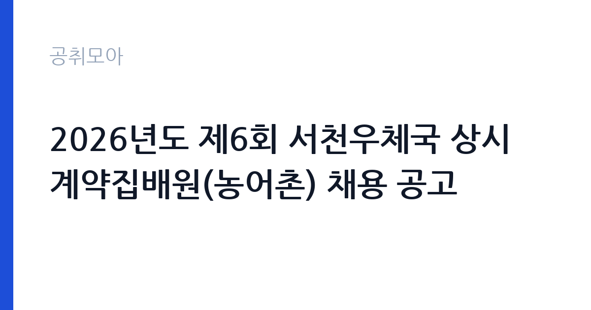

[국가기관] 2026년도 제6회 서천우체국 상시계약집배원(농어촌) 채용 공고
과학기술정보통신부 우정사업본부 충청지방우정청 서천우체국 · 충남 · 마감 2026-10-06 (D-8) · 출처 나라일터

한눈에 보는 모집 조건
| 기관 | 과학기술정보통신부 우정사업본부 충청지방우정청 서천우체국 |
|---|---|
| 공고명 | 2026년도 제6회 서천우체국 상시계약집배원(농어촌) 채용 공고 |
| 고용형태 | 공무직 |
| 근무지 | 충남 |
| 게시일 | 2026-09-29 |
| 마감일 | 2026-10-06 (D-8) |
지원자격, 이렇게 읽으세요
- 상시계약집배원 1명
- 접수 ~2026-10-06 마감
- 세부 조건은 원문 공고문 확인
집배 업무 특성상 이륜차 운전면허 등 운전 자격이 필수 요건인 경우가 많으므로 원문 공고문에서 자격증을 먼저 확인하십시오. 농어촌 지역 배달이라 장거리 운행이 포함되며, 신체검사와 실기시험(배달 실무 능력 평가)이 전형에 들어갑니다. 공무직 채용에서 자주 탈락하는 사유는 운전 경력 증빙 미비와 시력·청력 등 신체검사 기준 미달입니다. 서천우체국 우편물류과 소속으로 근무하므로 서천군 내 거주 또는 출퇴근 가능 여부도 미리 따져보십시오.
이 공고의 포인트
이 공고의 핵심은 상시계약이라는 고용 형태입니다. 이름에 계약이 들어가지만 무기계약직 공무직으로, 1년 이상 근무 시 퇴직금이 지급되고 4대보험과 맞춤형 복지제도가 적용됩니다(출처: 우정사업본부 집배원 채용 안내). 농어촌소포배달원은 전자상거래 확산으로 소포 물량이 꾸준히 느는 분야라 직무 안정성이 높습니다. 채용 인원이 1명이라 경쟁이 있겠지만, 실기시험이 포함된 실무형 전형이라 운전 실력과 체력을 갖춘 분께는 유리합니다.
전형은 어떻게 진행되나
전형 일정이 매우 빠릅니다. 원서 접수는 9월 30일부터 10월 6일까지이며, 서류전형 합격자는 10월 12일에 발표됩니다. 실기와 면접시험은 10월 13일 단 하루에 치러지고, 최종합격자는 10월 19일에 발표됩니다. 접수 마감부터 최종 발표까지 2주도 걸리지 않으므로 서류 준비와 실기 대비를 동시에 진행하셔야 합니다. 실기시험은 우편물 구분과 배달 경로 운행 같은 실무 능력으로 평가될 가능성이 큽니다.
원문에서 확인한 전형 방식
2026년도 제6회 서천우체국 농어촌소포배달원 채용 공고 서천우체국에서 농어촌 소포배달 관련 업무를 담당할 공무직 상시계약집배원(농어촌) 채용 계획을 다음과 같이 공고합니다. 2026.09.29. 서천우체국장 채용직종: 상시계약집배원(농어촌소포배달원) 채용인원: 1명 근무예정부서: 서천우체국 우편물류과 모집공고: 2026.9.29.(화) ~ 10.6.(화) 원서접수: 2026.9.30.(수) ~ 10.6.(화) 서류전형 합격자 발표: 2026.10.12.(월) 실기 및 면접시험: 2026.10.13.(화) 최종합격자 발표: 2026.10.19.(월) 자세한 사항은 공고문 참조하시기 바랍니다.
이런 분께 추천해요
- 이륜차 운전이 능숙하고 장시간 야외 근무가 가능한 분께 맞습니다. 농어촌 배달은 날씨와 지형에 영향을 많이 받는 직무입니다.
- 서천군 거주자로 안정적인 공무직 일자리를 찾는 분께 권합니다. 무기계약직이라 장기 근무 설계가 가능합니다.
- 필기시험 부담 없이 실무 능력으로 평가받고 싶은 분께 유리합니다. 서류와 실기·면접으로만 선발합니다.
지원 전 체크리스트
- 운전면허 등 필수 자격증 요건을 원문에서 확인했습니다. 면허 취득 예정자는 응시 가능 여부를 우체국에 문의하십시오.
- 실기시험 과목과 평가 기준을 확인했습니다. 배달 실무 경험이 있다면 경력증명서를 발급받아 두십시오.
- 신체검사 기준을 확인했습니다. 시력과 청력, 지체 장애 여부 등 집배 업무 수행 가능 여부가 판정 기준입니다.
- 접수처와 접수 방법(방문·우편·온라인)을 확인했습니다. 접수 기간이 7일로 짧으므로 9월 30일 접수 시작에 맞춰 제출하십시오.
모집 일정과 제출 타이밍
접수는 9월 30일부터 10월 6일까지 7일간입니다. 서류전형 합격자 발표는 10월 12일, 실기와 면접은 10월 13일, 최종 발표는 10월 19일입니다. 일정이 촉박하므로 지금 바로 운전면허증 사본과 경력증명서를 준비하고, 10월 첫 주에는 실기시험 대비 운행 연습을 병행하십시오. 면접 준비는 실기 다음 날이 아니라 실기와 같은 날 치러질 수 있으니 자기소개와 지원 동기를 미리 정리해 두셔야 합니다.
직무 이해하기: 국가기관
농어촌소포배달원은 서천군 관할 구역의 우편물과 소포를 수집·구분·배달하는 직무입니다. 일반 집배와 달리 소포 비중이 높아 차량 운행과 상하차 작업이 많습니다. 농어촌 지역은 배달 거리가 길고 주소 찾기가 어려워 경로 숙련도가 업무 효율을 좌우합니다. 우편물류과 소속으로 명절과 연말 성수기에는 연장근로가 발생하며, 관련 규정에 따라 수당이 지급됩니다. 고객 대면 응대도 잦아 친절과 정확성이 함께 요구됩니다.
자기소개서 작성 팁
지원서에서는 운전 경력을 구체적으로 쓰십시오. 이륜차 운행 경력 연수, 무사고 기간, 담당했던 배달 구역 규모 같은 수치가 설득력을 높입니다. 농어촌 지역 근무 의지는 서천군에 대한 이해와 연결해 쓰면 좋습니다. 체력과 안전 의식을 강조하고, 우편 서비스의 공공성을 이해하고 있다는 점을 한 문장으로 보여주십시오. 맞춤형 복지 같은 처우 이야기는 자소서에 쓰지 않는 것이 좋습니다.
면접 준비 포인트
면접에서는 안전 운행과 성수기 근무 의지를 집중적으로 물을 가능성이 큽니다. 악천후 배달과 장거리 운행 경험을 사례로 준비하십시오. 고객 민원 대응 경험을 묻는 질문에도 대비해야 합니다. 공무직으로서의 장기 근무 의지와 서천 지역 정착 계획을 묻는다면 구체적인 생활 계획을 답변에 포함하십시오. 우정사업과 집배원 직무에 대한 기본 이해를 보여주는 것이 중요합니다.
급여·근무조건 읽는 법
우정사업본부 공식 안내에 따르면 상시계약집배원의 임금 수준은 기본급과 각종 수당, 맞춤형 복지, 상여금을 포함한 세전 월 평균 약 224만 원입니다(출처: 우정사업본부 집배원 채용 안내 페이지). 유사한 농어촌소포배달원 공고(정선우체국 사례)에서는 기본급 월 1,956,270원에 운전수당·직무수당·명절수당·근속수당·정액급식비와 연장·휴일근로 실적수당이 별도로 지급됐습니다. 주 5일 하루 8시간 근무가 원칙이며 초과근무 시 수당이 지급됩니다. 서천우체국 공고의 정확한 보수액은 원문 공고문에서 확인하셔야 합니다.
자주 묻는 질문
- 상시계약집배원은 기간제인가요?
아닙니다. 상시계약집배원은 무기계약직 공무직으로 정년이 보장되는 고용 형태입니다. 우정사업본부 지방우정청 소속 지역 우체국에서 근무하며 4대보험과 퇴직금, 맞춤형 복지제도가 적용됩니다. - 실기시험은 무엇을 보나요?
우편물의 구분과 배달 실무 능력을 평가하는 시험으로, 집배 경로 운행과 이륜차 운전 숙련도가 핵심입니다. 정확한 과목과 배점은 원문 공고문에서 확인하십시오. - 근무지는 어디인가요?
서천우체국 우편물류과 소속으로 서천군 관할 농어촌 배달 구역을 담당합니다. 배달 구역은 입사 후 지정되며 순환될 수 있습니다.
함께 보면 좋은 공고
[국가기관] 조달청 기간제근로자 채용 공고(기계분야 설계검토) — 마감 2026-10-12[국가기관] 2026년 산학협력단 기간제 행정원 채용 공고 — 마감 2026-10-12[국가기관] 2026년도 제1회 전남대학교 교육혁신본부 계약직원 채용 공고(패키지지원대학사업) — 마감 2026-10-08출처: 나라일터 공개정보를 바탕으로 공취모아가 정리한 안내글입니다. 모집 조건·일정은 변경될 수 있으니 지원 전 반드시 원문 공고문을 확인하세요. 본 글은 정보 제공용이며 합격을 보장하지 않습니다.